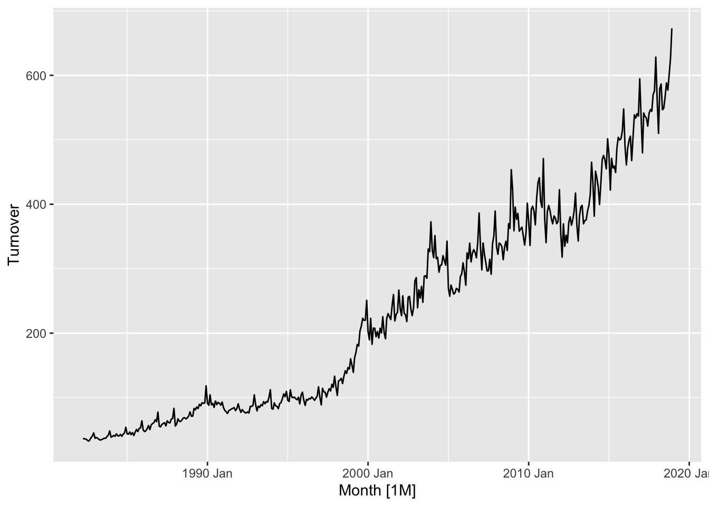
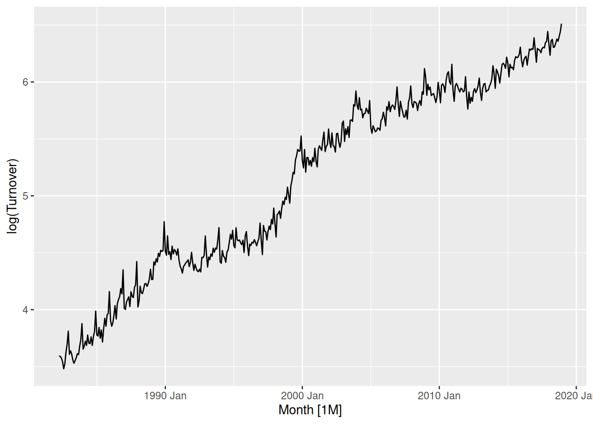
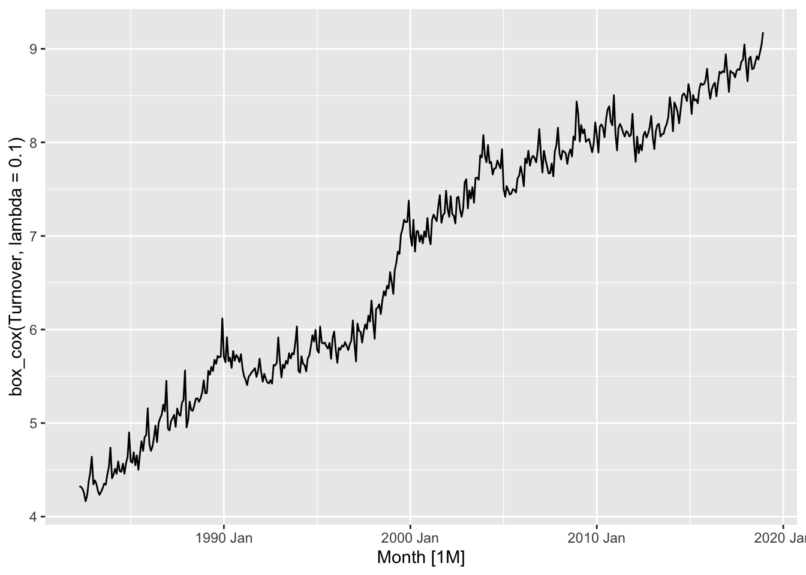
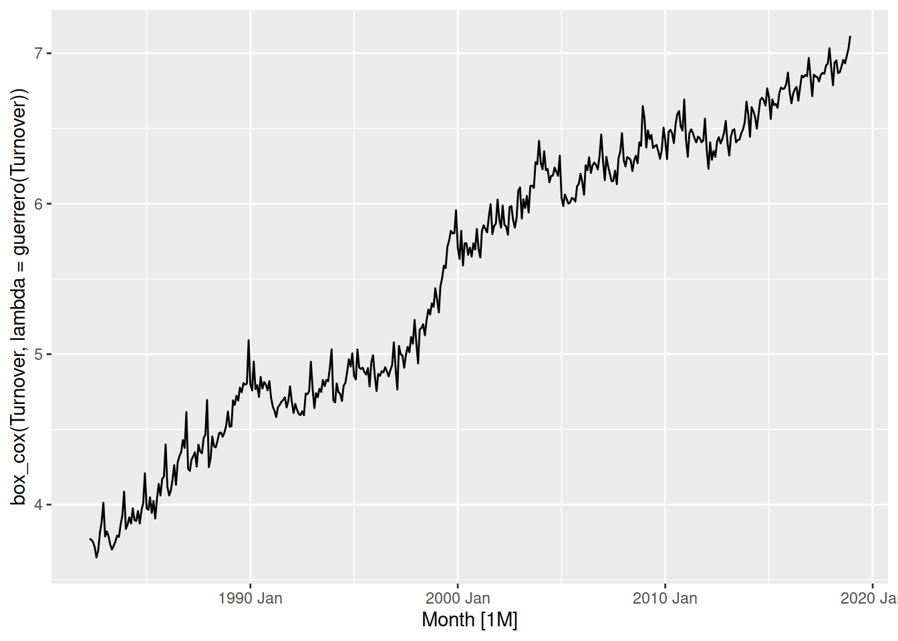
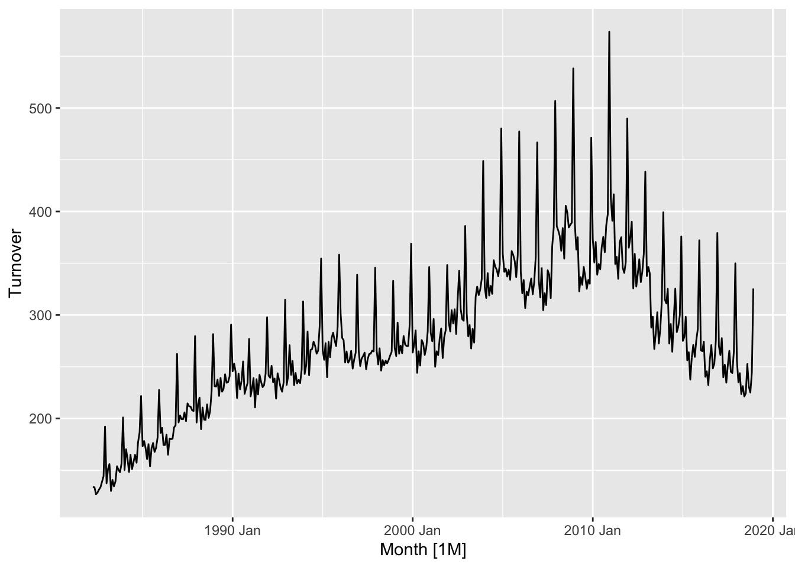
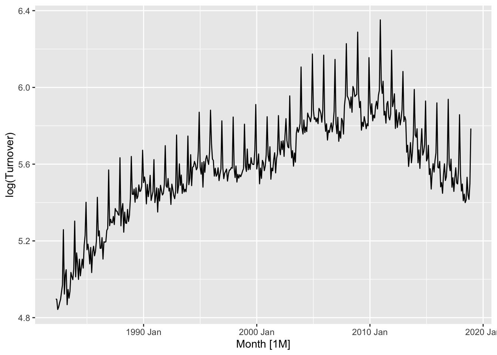
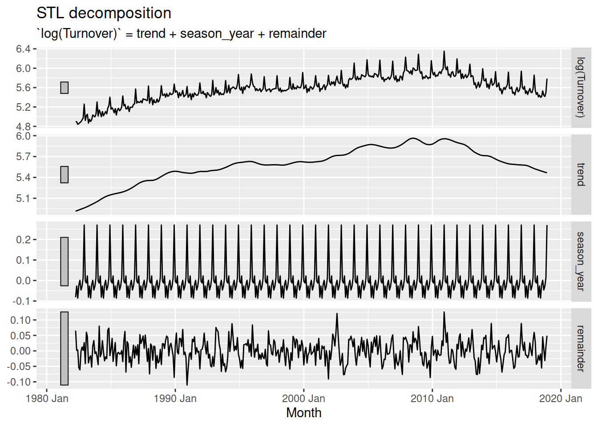
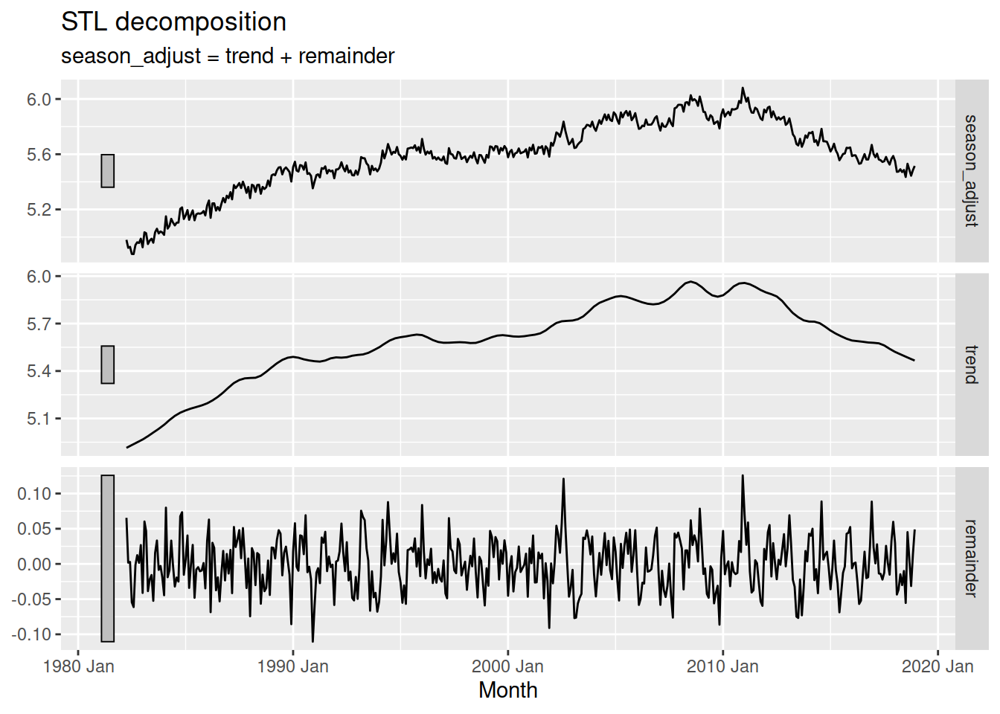
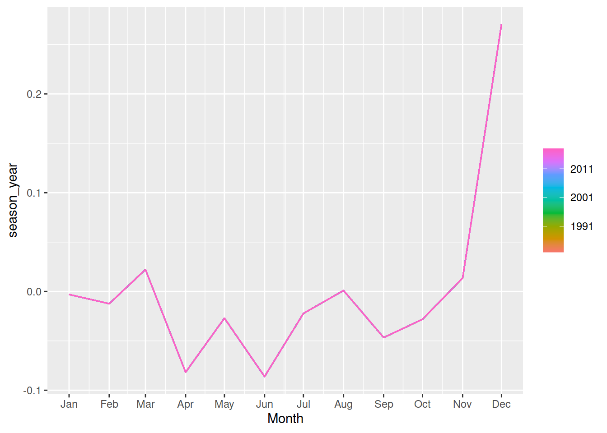

Transformations provide useful simplifications of the patterns in a time series. Simplifying the patterns makes them easier to model, and so transforming the data is a common preliminary step in producing forecasts. Some transformations standardise values to be comparable between countries or other series in the dataset, while others can regularise the variation in the data.
Let’s look at the turnover of print media in Australia.
library(tsibbledata)library(fable)
Loading required package: fabletools
library(dplyr)
Attaching package: 'dplyr'
The following objects are masked from 'package:stats':
filter, lag
The following objects are masked from 'package:base':
intersect, setdiff, setequal, union
aus_print <- aus_retail |>filter(Industry =="Newspaper and book retailing") |>summarise(Turnover =sum(Turnover))aus_print |>autoplot(Turnover)
Turnover has increased until the end of 2010, after which it has steadily declined. When looking at monetary value it is common to consider price indices to ensure that turnover is comparable over time. This allows you to identify patterns and changes such as turning points in real monetary terms.
Data for transformations
It can be useful to use other datasets that contain information for the transformation. To do this we can merge the datasets in time using join operations.
library(lubridate)
Attaching package: 'lubridate'
The following objects are masked from 'package:base':
date, intersect, setdiff, union
After taking into account CPI, the real monetary Turnover of the print media industry in Australia has been gradually declining since 1990-2000.
Your turn!
Select a country of your choice from global_economy, then calculate and visualise the the GDP per capita over time (that is, the GDP scaled by the population).
Tricky to forecast
While transformations help to make the patterns simpler to forecast, if additional information like CPI or Population are used then they will also need to be forecasted. While population is generally easy to forecast, CPI could be more complicated to forecast than the thing you’re originally forecasting!
Another useful transformation is calendar adjustments. This adjusts the observations in the time series to represent an equivalent time period, and can simplify seasonal patterns which result from these different lengths. This is particularly useful for monthly data, since the number of days in each month varies substantially.
Calculate the monthly total Australian retail turnover from aus_retail and visualise the seasonal pattern. Then scale by the number of days in each month to calculate the daily average turnover and comparse the seasonal patterns.
Mathematical transformations are useful since they don’t require providing any future values to produce the forecasts. Log and power transformations (\(y^k\), for example square root, square, and inverse) are particularly helpful for regularising variation proportional to the level of the series.
aus_retail |>filter(State =="Victoria", Industry =="Cafes, restaurants and catering services") |>autoplot(Turnover)

This proportional variance is common in time series, in Victoria’s cafe and restaurant turnover you can see small changes when turnover is low (before 2000), and is much larger after 2010 when turnover is much larger.
aus_retail |>filter(State =="Victoria", Industry =="Cafes, restaurants and catering services") |>autoplot(log(Turnover))

Log transforming the data changes this variation to be more consistent, where the variation before 2000 is now more similar to after 2010.
The box-cox transformation family parameterises the range of power transformations for more precise adjustments. The transformation parameter \(\lambda\) controls the strength of the transformation, with \(\lambda=1\) being no change in shape, \(\lambda = 0\) being a log transformation and others being equivalent in shape to \(y^\lambda\).
The log transformation above was a bit strong, so let’s try something slightly close to \(\lambda=1\) - perhaps \(\lambda = 0.1\)?
aus_retail |>filter(State =="Victoria", Industry =="Cafes, restaurants and catering services") |>autoplot(box_cox(Turnover, lambda =0.1))

The variation is now consistent for the entire series, and the trend is linear.
Automatic box-cox transformations
The \(\lambda\) parameter can be automatically computed using the guerrero() function.
We can calculate the optimal box-cox parameter using features() and guerrero():
aus_retail |>filter(State =="Victoria", Industry =="Cafes, restaurants and catering services") |>features(Turnover, features = guerrero)
# A tibble: 1 × 3
State Industry lambda_guerrero
<chr> <chr> <dbl>
1 Victoria Cafes, restaurants and catering services 0.173
Looks like we were pretty close with \(\lambda = 0.1\), let’s try using this more precise estimate:
aus_retail |>filter(State =="Victoria", Industry =="Cafes, restaurants and catering services") |>autoplot(box_cox(Turnover, lambda =guerrero(Turnover)))

The optimised box-cox transformation is very similar to \(\lambda = 0.1\) - fortunately for us we don’t have to be precise since this transformation isn’t sensitive to your choice of parameter. So long as you are within \(\pm 0.1\) the transformation should be okay. Additionally, if \(\lambda \approx 0\) then it is common to instead use the simpler log() transformation.
Your turn!
Find a suitable box-cox transformation for the monthly total Australian retail turnover, then compare your choice with the automatically selected parameter from the guerrero() feature.
Decomposition
Another commonly used transformation/adjustment requires a model to decompose the time series into its components. Seasonally adjusted time series are often used by analysts and policy makers to evaluate the underlying long term trends without the added complexity of seasonality. The STL decomposition is useful model which can isolate the seasonal pattern from the trend and remainder for many types of time series.
The STL decomposition separates time series into the form \(Y = \text{trend} + \text{seasonality} + \text{remainder}\). Since this is an additive decomposition, we must first simplify any multiplicative patterns into additive ones using a suitable power transformation. Let’s try to remove the annual seasonality from Australia’s print media turnover.
aus_print |>autoplot(Turnover)

The seasonality is more varied when turnover increases, so we must transform the data before estimating the STL model.
aus_print |>autoplot(log(Turnover))

The log transformation (\(\lambda = 0\)) does a great job at producing a consistent variation throughout the series. You could try to find a better transformation using the box-cox transformation family, however there is no need for it here.
We can estimate the STL model using STL() as follows:
fit <- aus_print |>model(STL(log(Turnover)))fit
# A mable: 1 x 1
`STL(log(Turnover))`
<model>
1 <STL>
The decomposition can be obtained from the model using components(), and then all of the components can be plotted with autoplot():
The components are obtained using rolling estimation windows, which are the main way the decomposition is changed. A large window produces smooth components, and a small window produces flexible and quickly changing components.
The infinite window for the seasonality results in a seasonal pattern that doesn’t change over time, while the small trend window allows the trend to change very quickly. The best choice of estimation window should produce components that match the patterns in the original data while being as smooth as possible.
fit <- aus_print |>model(STL(log(Turnover) ~trend(window =25) +season(window =Inf))) fit |>components() |>autoplot()

A trend window of 25 for this dataset produces a mostly smooth trend component which can still react to brief decreases in turnover. The constant seasonal pattern (infinite window) is reasonable for this dataset since the seasonality doesn’t change much over time.
Seasonal adjustment
You can find the de-seasonalised data in the season_adjust column of the components() output.
fit |>components() |>autoplot(season_adjust)

Your turn!
Find a suitable STL decomposition for the total Australian retail turnover, then produce and visualise the seasonally adjusted time series.
Hint: don’t forget to use the suitable transformation found previously!
Seasonal decomposition also makes it easier to take a look at the seasonality - we can use a combination of seasonal plots and decomposition to more easily see seasonal patterns.
fit |>components() |>gg_season(season_year)

If the seasonal window allows the seasonal component to change over time, the gg_subseries() plot is especially useful for seeing how the pattern changes.
January and December seem to increase over time, while April, May and June are decreasing.
Your turn!
Produce appropriate seasonal plots of the seasonal component from your STL decomposition on Australian retail turnover.
Features
A useful technique for visualising large collections of time series is to produce summaries of their patterns known as features. Visualising many time series simultaneously is difficult since the scale and shape of patterns can vary substantially. The features() function will compute single value summaries over time such as the strength of trend or seasonality. There are many features available, but the features from STL decompositions are particularly interesting.
In particular, features from STL decompositions allow you to compare the strength of trend and seasonality between many time series.
library(ggplot2)aus_retail |>features(Turnover, feat_stl) |>ggplot(aes(x = trend_strength, y = seasonal_strength_year)) +geom_point()
From this we can see that almost all time series have a strong trend, while the strength of seasonality is more varied - some series have strong seasonality while others have less seasonality.
Your turn!
Calculate the STL features for the time series in the tourism dataset. Try colouring the points in the scatterplot by the purpose of travel, are some reasons more trended or seasonal than others?
There are many other features that you can use - check out the documentation for ?features_by_pkg. You can produce a feature set of similar features using the feature_set() function.
Do an STL decomposition of dose_adminstrated for a region of your choice. You will need to choose a trend and seasonal window to allow for the changing shape of these components. How do values of parameters in trend and season changes the decomposition?
Plot the components from the STL decomposition.
Could you describe the result of the decomposition.
Could you produce a seasonally adjusted series and plot them with the dose admonstarted and the trend?
Computing features
Computer average, standard deviation and coefficient of variation (cv) for the monthly time series
Compute all features for 9 monthly time series corresponding to vaccine doses adminstrated in 9 regions
Examine the following features and provide an interpretation based on their values:
spectral entropy
trend
seasonality
acf1
season_acf1
Visualizing features
Create a scatter plot that shows the strength of trend versus strength of seasonality. What information does this plot convey?
Which feature indicates how difficult/easy a time series is to forecast? Use that feature to create a distribution of forecastability of time series usign a boxplot or density plot. How such distribution could be informative?